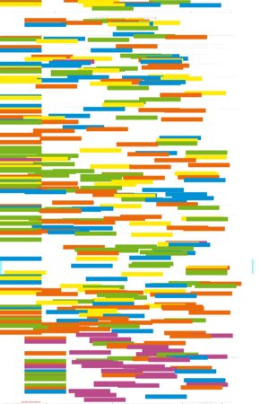

| About IR |
| Editors |
| Author instructions |
| Copyright |
| Author index |
| Subject index |
| Search |
| Reviews |
| Weblog |
| Register |
| Home |
Volume 11 No 4 July, 2006
Papers presented at ISIC 2006: the 6th Information Seeking in Context Conference, Sydney, Australia, 19-21 July, 2006 — Part I
T.D. Wilson
A re-examination of information seeking behaviour in the context of activity theory
Reijo Savolainen
Spatial factors as contextual qualifiers of information seeking
Joan C. Durrance, Maria Souden, Dana Walker & Karen E. Fisher
Community problem-solving framed as a distributed information use environment: bridging research and practice
Judit Bar-Ilan, Nira Shalom, Snunith Shoham, Shifra Baruchson-Arbib & Irith Getz
The role of information in a lifetime process – a model of weight maintenance by women over long time periods
Ross J. Todd
From information to knowledge: charting and measuring changes in students' knowledge of a curriculum topic
Jannica Heinström
Fast surfing for availability or deep diving into quality - motivation and information seeking among middle and high school students
Jennifer Berryman
What defines 'enough' information? How policy workers make judgements and decisions during information seeking: preliminary results from an exploratory study
C. Nadine Wathen and Roma M. Harris
An examination of the health information seeking experiences of women in rural Ontario, Canada.
Natalya Godbold
Beyond information seeking: towards a general model of information behaviour.
Diane H. Sonnenwald
Challenges in sharing information effectively: examples from command and control.
Other peer-reviewed papers
M. Weideman and F. Schwenke
The influence that JavaScript™ has on the visibility of a Website to search engines - a pilot study
Ricardo Baeza-Yates and José A. Pino
Towards formal evaluation
of collaborative work
Carole George, Alice Bright, Terry Hurlbert, Erika C. Linke, Gloriana St. Clair and Joan Stein
Scholarly use of information: graduate students' information seeking behaviour
Kristin R. Eschenfelder, Robert Glenn Howard & Anuj C. Desai
The ethics of DeCSS posting: towards assessing the morality of the Internet posting of DVD copyright circumvention software.
 Resúmenes en Español
Resúmenes en Español
Watch this: Ajax, YUI and Web 2.0 — one of a series of occasional columns by Terrence A. Brooks of the Information School, University of Washington, USA.
Call for papers: Activity Theory and Information Studies
Reviews
Connerley, Mary L. and Pedersen, Paul B. Leadership in a diverse and multicultural environment: developing awareness, knowledge, and skills. Thousand Oaks, CA: Sage Publications, 2005.
Curzon, Susan Carol. Managing change: a how-to-do-it manual for librarians. London: Facet Publishing, 2006.
Einspruch, Eric L. An introductory guide to SPSS® for Windows®. 2nd ed. Thousand Oaks, CA: Sage Publications, 2005.
Gordon, Rachel Singer. The nextgen librarian's survival guide. Medford, NJ: Information Today, Inc., 2006.
Luenberger, David G. Information science. Princeton, NJ; Oxford: Princeton University Press. 2006.
Newman, M., Barabási, A-L. and Watts, D.J. The structure and dynamics of networks. Princeton, NJ: Princeton University Press, 2006.
Oates, Briony J. Researching information systems and computing. London: Sage Publications, 2006.
Spink, Amanda and Cole, Charles (Eds.). New directions in human information behaviour. Dordrecht: Springer, 2006.
Swinford, Echo Fixing PowerPoint annoyances. How to fix the most annoying things about your favorite presentation program. Sebastopol, CA: O'Reilly, 2006.
Tatnall, Arthur (Ed.). Web portals: The new gateways to Internet information and services. Hershey, PA: Idea Group Publishing, 2005.
What's in the open access e-journals?
Conference announcements
A message to Conference organizers.
Information, Communication, Society. 10th Anniversary International Symposium, University of York, 20th-22nd September 2006
First International Symposium on Information Interaction in Context (IIiX) 18-20 October, 2006, Copenhagen, Denmark
International Conference on Digital Libraries, 5-8 December, 2006, New Delhi, India
Check the other resources available at InformationR.net - free resources for information researchers. If you find Information Research useful please sign in and we'll notify you of future issues.
Contribute ideas and links to relevant resources on the Weblog. Join at
http://www.free-conversant.com/irweblog/
Information Research: an international electronic journal, is published four times a year by Professor Tom Wilson with technical support from Lund University, Sweden and editorial support from the Swedish School of Librarianship and Information Science, Högskolan in Borås.
| ||||
 |
|
Web Counter |
||